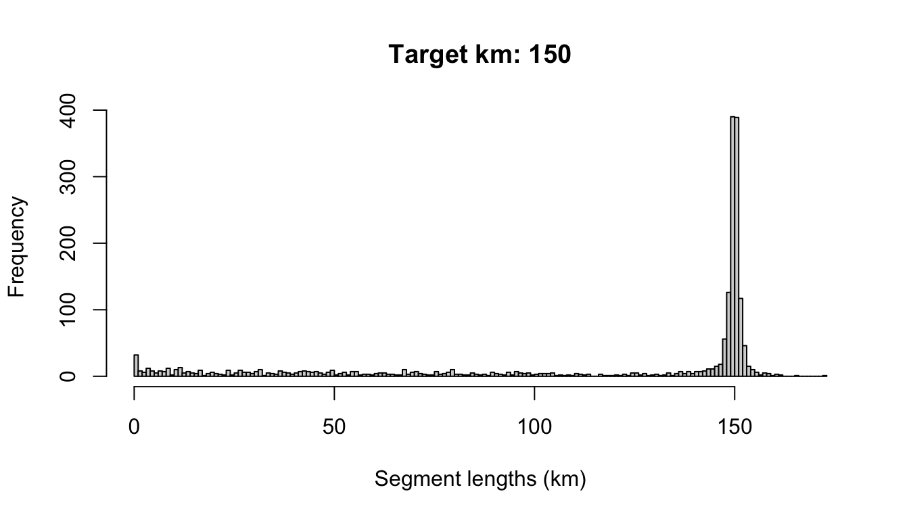

3 Data processing
In our WHICEAS case study example, we are interested in estimating density/abundance for 2017 and 2020 only, but we want to use surveys from previous years to help model species detection functions. We will therefore be using a dataset of NOAA surveys in the Central North Pacific from 1986 to 2020.
You can process your survey data using a single function, process_surveys(), which takes two arguments: the filepath(s) to your DAS survey data, and your settings object. For example:
That single command will convert your raw DAS data to a “cruz” object, a list of polished datasets that are prepared to be passed to subsequent analyses.
Behind the scenes
The process_surveys() function is a wrapper for several discrete stages of data formatting/processing. Behind the scenes, each of those stages is carried out using a specific LTabundR function. The remainder of this page is a detailed step-by-step explanation of the data processing that occurs when you call process_surveys().
Bring in cruise data
Read in and process your .DAS file using the functions in Sam Woodward’s swfscDAS package. To do so quickly, we built a wrapper function that makes this quick and easy:
Process strata
Run the following function to add strata and study-area information to each row of DAS data:
This function loops through each stratum data.frame you have provided it in settings$strata, formats the stratum, and asks whether each DAS row occurs within it. For each stratum, a column named stratum_<StratumName> is added to the das object; each row in this column is TRUE (included) or FALSE.
A similar procedure is run if a dataframe is provided in settings$study_area. A column named study_area is added to das containing a boolean (TRUE if the sub-segment or sighting occurs within the study area).
Format DAS data into a cruz object
The function format_das() takes care of some final formatting and initiates the cruz object data structure.
This function (1) remove rows with invalid Cruise numbers, times, or locations; (ii) calculate the distance, in km, between each row of data; (iii) adds a ship column to the dataset, with initials for the ship corresponding to each cruise; (iv) creates a new list, cohorts, which copies the cruise data for each cohort specified in your settings; and (v) adds a stratum column to the data in each cohort. That column specifies
a single stratum assignment for each row of DAS data in the event of overlapping strata, based upon the cohort setting stratum_overlap_handling.
The cruz object
The function format_das() returns a list, which we have saved in an object named cruz, with several slots:
The slots strata and study_area provide the area, in square km, of each polygon being used:
cruz$strata
stratum area
1 HI_EEZ 2474595.769
2 OtherCNP 34215265.219
3 MHI 212033.063
4 WHICEAS 402948.734
5 Spotted_OU 5102.666
6 Spotted_FI 10509.869
7 Spotted_BI 39454.720
8 Bottlenose_KaNi 2755.024
9 Bottlenose_OUFI 14417.035
10 Bottlenose_BI 4668.072
11 NWHI 449375.569The slot cohorts is itself a list with one slot for each cohort. The slots are named using the id cohort setting.
Each cohort slot has a copy of the DAS data with a new stratum column, which contains a stratum assignment tailored to its cohort-specific settings. For instance, the all cohort, whose stratum_overlap_handling is set to "smallest", assigns the smallest stratum in the event of overlapping or nested strata:
Since the bottlenose cohort uses a different subset of geostrata, its distribution of stratum assignments will also differ:
cruz$cohorts$bottlenose$stratum %>% table(useNA='ifany')
.
Bottlenose_BI Bottlenose_KaNi Bottlenose_OUFI HI_EEZ OtherCNP
3415 1495 6862 117715 126248
WHICEAS
73897 This list, with these five primary slots, will be referred to from hereon as a cruz object.
Segmentize the data
To allocate survey data into discrete ‘effort segments’, which are used in variance estimation in subsequent steps, run the function segmentize(). This process is controlled by both survey-wide and cohort-specific settings, which are now carried in a slot within the cruz object. The process is outlined in detail in the Appendix on Segmentizing.
This function does not change the high-level structure of the cruz object …
… or the cohort names in the cohorts slot:
For each cohorts slot, the list structure is the same:
cruz$cohorts$all %>% names
[1] "segments" "das"
cruz$cohorts$bottlenose %>% names
[1] "segments" "das"
cruz$cohorts$spotted %>% names
[1] "segments" "das" The segments slot contains summary data for each effort segment, including start/mid/end coordinates, average conditions, and segment distance:
cruz$cohorts$all$segments %>% glimpse
Rows: 1,888
Columns: 37
$ Cruise <dbl> 901, 901, 901, 901, 901, 901, 901, 901, 901, 901, 901, 90…
$ ship <chr> "Mc2", "Mc2", "Mc2", "Mc2", "Mc2", "Mc2", "Mc2", "Mc2", "…
$ stratum <chr> "WHICEAS", "WHICEAS", "WHICEAS", "WHICEAS", "WHICEAS", "W…
$ seg_id <int> 1, 2, 3, 4, 5, 6, 7, 8, 9, 10, 11, 12, 13, 14, 15, 16, 17…
$ yday <dbl> 37, 41, 44, 44, 49, 55, 37, 37, 41, 43, 46, 47, 48, 37, 3…
$ dist <dbl> 149.851072, 149.959115, 3.366761, 150.656675, 149.562750,…
$ lat1 <dbl> 21.99817, 21.14833, 19.17733, 19.19833, 20.40850, 21.7600…
$ lon1 <dbl> -159.1487, -158.0103, -156.0610, -156.0760, -156.1288, -1…
$ DateTime1 <dttm> 2009-02-06 07:33:52, 2009-02-10 09:41:09, 2009-02-13 17:…
$ timestamp1 <dbl> 1233905632, 1234258869, 1234545197, 1234548006, 123498100…
$ lat2 <dbl> 21.14850, 19.18117, 19.19783, 20.40850, 21.76150, 21.6810…
$ lon2 <dbl> -158.0097, -156.0583, -156.0758, -156.1288, -157.2517, -1…
$ DateTime2 <dttm> 2009-02-10 09:40:54, 2009-02-13 17:11:22, 2009-02-13 17:…
$ timestamp2 <dbl> 1234258854, 1234545082, 1234547957, 1234981000, 123549202…
$ mlat <dbl> 19.57617, 21.37917, 19.18500, 19.80333, 22.46000, 21.7095…
$ mlon <dbl> -156.0153, -160.3327, -156.0727, -155.0388, -160.4300, -1…
$ mDateTime <dttm> 2009-02-08 07:57:43, 2009-02-11 10:36:04, 2009-02-13 17:…
$ mtimestamp <dbl> 1233905632, 1234258869, 1234545197, 1234548006, 123498100…
$ use <lgl> FALSE, FALSE, FALSE, FALSE, FALSE, FALSE, TRUE, TRUE, TRU…
$ Mode <chr> "C", "C", "C", "C", "C", "C", "C", "C", "C", "C", "C", "C…
$ EffType <chr> NA, "N", "S", "S", "S", "S", "N", "N", "N", "N", "N", "N"…
$ OnEffort <lgl> TRUE, FALSE, FALSE, FALSE, FALSE, FALSE, TRUE, TRUE, TRUE…
$ ESWsides <dbl> NA, 2, 2, 2, 2, 2, 2, 2, 2, 2, 2, 2, 2, 2, 2, 2, 2, 2, 2,…
$ year <dbl> 2009, 2009, 2009, 2009, 2009, 2009, 2009, 2009, 2009, 200…
$ month <dbl> 2, 2, 2, 2, 2, 2, 2, 2, 2, 2, 2, 2, 2, 2, 2, 2, 2, 2, 2, …
$ day <int> 6, 10, 13, 13, 18, 24, 6, 6, 10, 12, 15, 16, 17, 6, 7, 7,…
$ min_line <int> 424489, 425732, 426950, 426976, 428376, 429786, 424728, 4…
$ max_line <int> 425731, 426949, 426975, 428375, 429785, 429845, 424824, 4…
$ n_rows <int> 588, 606, 26, 611, 520, 38, 74, 31, 51, 211, 62, 22, 95, …
$ avgBft <dbl> 3.937522, 2.669176, 3.000000, 4.236977, 5.318873, 6.61395…
$ avgSwellHght <dbl> 3.665611, 2.942091, 4.000000, 4.295680, 5.762063, 7.38604…
$ avgHorizSun <dbl> 5.476773, 5.353724, 4.000000, 7.670550, 4.988936, NaN, 4.…
$ avgVertSun <dbl> 1.510175, 1.636948, 1.000000, 1.660281, 1.465219, NaN, 1.…
$ avgGlare <dbl> 0.01104594, 0.24518732, 0.00000000, 0.11466734, 0.0000000…
$ avgVis <dbl> 6.707940, 5.875014, 5.000000, 5.630527, 5.800907, 6.19302…
$ avgCourse <dbl> 182.5003, 153.2785, 88.0000, 204.8376, 166.4348, 108.6140…
$ avgSpdKt <dbl> 8.296386, 9.165131, 9.900000, 9.395206, 9.292142, 8.62279…# Number of segments
cruz$cohorts$all$segments %>% nrow
[1] 1888
# Segment length distribution
x <- cruz$cohorts$all$segments$dist
hist(x,
breaks = seq(0,ceiling(max(x, na.rm=TRUE)),by=1),
xlab='Segment lengths (km)',
main=paste0('Target km: ',settings$survey$segment_target_km))
And the das slot holds the original data.frame of DAS data, modified slightly: the column OnEffort has been modified according to Beaufort range conditions, and the column seg_id indicates which segment the event occurs within
cruz$cohorts$all$das %>% names
[1] "Event" "DateTime" "Lat" "Lon"
[5] "OnEffort" "Cruise" "Mode" "OffsetGMT"
[9] "EffType" "ESWsides" "Course" "SpdKt"
[13] "Bft" "SwellHght" "WindSpdKt" "RainFog"
[17] "HorizSun" "VertSun" "Glare" "Vis"
[21] "ObsL" "Rec" "ObsR" "ObsInd"
[25] "Data1" "Data2" "Data3" "Data4"
[29] "Data5" "Data6" "Data7" "Data8"
[33] "Data9" "Data10" "Data11" "Data12"
[37] "EffortDot" "EventNum" "file_das" "line_num"
[41] "stratum_HI_EEZ" "stratum_OtherCNP" "stratum_WHICEAS" "year"
[45] "month" "day" "yday" "km_int"
[49] "km_cum" "ship" "stratum" "seg_id"
[53] "use" The segmentize() function and its associated settings were designed to give researchers full control over how data are segmented, be it for design-based density analysis (which tend to use long segments of 100 km or more and allow for non-contiguous effort to be included in the same segment) or for habitat modeling (which tend to use short segments of 5 - 10 km and disallow non-contiguous effort to be pooled into the same segment). To demonstrate that versatility, checkout the appendix on segmentizing.
Process sightings
To process sightings for each cohort of species, use the function process_sightings(). This function has three basic steps: for each cohort, the function (1) prepares a sightings table using the function das_sight() from swfscDAS; (2) filters those sightings to species codes specified for the cohort in your settings input; and (3) evaluates each of those sightings, asking if each should be included in the analysis according to your settings.
The function produces a formatted dataset and adds it to a new sightings slot.
cruz$cohorts$all %>% names
[1] "segments" "das" "sightings"
cruz$cohorts$bottlenose %>% names
[1] "segments" "das" "sightings"
cruz$cohorts$spotted %>% names
[1] "segments" "das" "sightings"Note that the sightings table has a column named included (TRUE = yes, use it in the analysis). Any sightings that do not meet the inclusion criteria as specified in your settings will be included = FALSE, but they won’t be removed from the data.
The sightings table also has a new column, ss_valid,
indicating whether or not the school size estimate for this sighting
is valid and appropriate for use in abundance estimation and detection function fitting
when school size is used as a covariate.
Since the sightings in each cohort are processed slightly differently according to the cohort’s specific settings – most importantly the species that will be included – you should expect different numbers of included/excluded sightings in each cohort dataset:
cruz$cohorts$all$sightings$included %>% table
.
FALSE TRUE
810 3124
cruz$cohorts$bottlenose$sightings$included %>% table
.
FALSE TRUE
114 409 When this function’s verbose argument is TRUE (the default), a message is printed each time a sighting does not meet the inclusion criteria.
Sightings data structure
The sightings table has many other variables:
cruz$cohorts$all$sightings %>% names
[1] "Event" "DateTime" "Lat" "Lon"
[5] "OnEffort" "Cruise" "Mode" "OffsetGMT"
[9] "EffType" "ESWsides" "Course" "SpdKt"
[13] "Bft" "SwellHght" "WindSpdKt" "RainFog"
[17] "HorizSun" "VertSun" "Glare" "Vis"
[21] "ObsL" "Rec" "ObsR" "ObsInd"
[25] "EffortDot" "EventNum" "file_das" "line_num"
[29] "stratum_HI_EEZ" "stratum_OtherCNP" "stratum_WHICEAS" "year"
[33] "month" "day" "yday" "km_int"
[37] "km_cum" "ship" "stratum" "seg_id"
[41] "use" "SightNo" "Subgroup" "SightNoDaily"
[45] "Obs" "ObsStd" "Bearing" "Reticle"
[49] "DistNm" "Cue" "Method" "Photos"
[53] "Birds" "CalibSchool" "PhotosAerial" "Biopsy"
[57] "CourseSchool" "TurtleSp" "TurtleGs" "TurtleJFR"
[61] "TurtleAge" "TurtleCapt" "PinnipedSp" "PinnipedGs"
[65] "BoatType" "BoatGs" "PerpDistKm" "species"
[69] "best" "low" "high" "prob"
[73] "mixed" "ss_tot" "lnsstot" "ss_percent"
[77] "n_sp" "n_obs" "n_best" "n_low"
[81] "n_high" "calibr" "ss_valid" "mixed_max"
[85] "spp_max" "included" Columns 42 onwards correspond to sightings information. Columns of note:
speciescontains the species code. There is only one species-code per row (i.e, multi-species sightings have been expanded to multiple rows).best,low, andhighcontain the refined group size estimates, averaged across observers and calibrated according to the cohort’s settings specifications. For multi-species sightings, these numbers represent the number of individuals for the single species represented in the row (i.e., the original group size estimate has been scaled by the percentage attritbuted to this species).The columns following those group size estimates (
probthroughspp_max) detail how group sizes were estimated:probindicates whether probable species codes were accepted;mixedindicates whether this species’ sighting is part of a mixed-species sighting;n_spprovides the number of species occurring in this sighitng;n_obsgives the number of observers who contributed group size estimates;n_bestthroughn_highgives the number of valid group size estimates given; andcalibrindicates whether or not calibration was attempted for this sighting based on the settings (see next section);mixed_maxindicates whether this species was the most abundant in the sighting (if multi-species);spp_maxindicates the species code for the most abundant species in the sighting (if multi-species).As explained above, the final column,
included, indicates whether this species should be included in the analysis.
Here is a glimpse of the data:
cruz$cohorts$all$sightings %>% glimpse
Rows: 3,934
Columns: 86
$ Event <chr> "S", "S", "S", "S", "S", "S", "S", "S", "S", "S", "S"…
$ DateTime <dttm> 1986-11-26 09:00:00, 1986-11-26 14:40:00, 1986-11-26…
$ Lat <dbl> 4.983333, 5.616667, 5.866667, 7.050000, 7.466667, 9.4…
$ Lon <dbl> -120.9500, -121.6667, -121.9833, -123.5000, -123.9167…
$ OnEffort <lgl> TRUE, TRUE, TRUE, TRUE, TRUE, TRUE, TRUE, TRUE, TRUE,…
$ Cruise <dbl> 989, 989, 989, 989, 989, 989, 989, 989, 989, 989, 989…
$ Mode <chr> "C", "C", "C", "C", "C", "C", "C", "C", "C", "C", "C"…
$ OffsetGMT <int> NA, NA, NA, NA, NA, NA, NA, NA, NA, NA, NA, NA, NA, N…
$ EffType <chr> "S", "S", "S", "S", "S", "S", "S", "S", "S", "S", "S"…
$ ESWsides <dbl> 2, 2, 2, 2, 2, 2, 2, 2, 2, 2, 2, 2, 2, 2, 2, 2, 2, 2,…
$ Course <dbl> 310, 316, 313, 310, 310, 305, 305, 305, 305, 305, 305…
$ SpdKt <dbl> 10.2, 9.9, 9.6, 10.2, 10.3, 9.8, 9.8, 9.6, 10.1, 10.1…
$ Bft <dbl> 4, 4, 4, 3, 3, 2, 2, 2, 1, 1, 1, 4, 5, 4, 4, 3, 1, 2,…
$ SwellHght <dbl> NA, NA, NA, NA, NA, NA, NA, NA, NA, NA, NA, NA, NA, N…
$ WindSpdKt <dbl> NA, NA, NA, NA, NA, NA, NA, NA, NA, NA, NA, NA, NA, N…
$ RainFog <dbl> 1, 1, 1, 1, 1, 1, 1, 1, 1, 1, 1, 1, 1, 1, 1, 1, 1, 1,…
$ HorizSun <dbl> 6, 9, 10, NA, 7, 5, 5, 7, 8, 8, 8, 3, 5, NA, 4, NA, N…
$ VertSun <dbl> 2, 1, 3, NA, 1, 3, 3, 1, 1, 1, 1, 2, 1, NA, 1, NA, NA…
$ Glare <lgl> FALSE, FALSE, FALSE, NA, FALSE, FALSE, FALSE, FALSE, …
$ Vis <dbl> NA, NA, NA, NA, NA, NA, NA, NA, NA, NA, NA, NA, NA, N…
$ ObsL <chr> "004", "022", "056", "056", "004", "031", "031", "004…
$ Rec <chr> "056", "031", "062", "062", "056", "022", "022", "056…
$ ObsR <chr> "062", "057", "004", "004", "062", "057", "057", "062…
$ ObsInd <chr> NA, NA, NA, NA, NA, NA, NA, NA, NA, NA, NA, NA, NA, N…
$ EffortDot <lgl> TRUE, TRUE, TRUE, TRUE, TRUE, TRUE, TRUE, TRUE, TRUE,…
$ EventNum <chr> "18", "43", "59", "9", "32", "10", "10", "22", "34", …
$ file_das <chr> "CenPac1986-2020_Final_alb.das", "CenPac1986-2020_Fin…
$ line_num <int> 10295, 10321, 10340, 10358, 10384, 10451, 10451, 1046…
$ stratum_HI_EEZ <lgl> FALSE, FALSE, FALSE, FALSE, FALSE, FALSE, FALSE, FALS…
$ stratum_OtherCNP <lgl> TRUE, TRUE, TRUE, TRUE, TRUE, TRUE, TRUE, TRUE, TRUE,…
$ stratum_WHICEAS <lgl> FALSE, FALSE, FALSE, FALSE, FALSE, FALSE, FALSE, FALS…
$ year <dbl> 1986, 1986, 1986, 1986, 1986, 1986, 1986, 1986, 1986,…
$ month <dbl> 11, 11, 11, 11, 11, 11, 11, 11, 11, 11, 11, 11, 11, 1…
$ day <int> 26, 26, 26, 27, 27, 28, 28, 28, 28, 28, 28, 29, 29, 3…
$ yday <dbl> 330, 330, 330, 331, 331, 332, 332, 332, 332, 332, 332…
$ km_int <dbl> 0, 0, 0, 0, 0, 0, 0, 0, 0, 0, 0, 0, 0, 0, 0, 0, 0, 0,…
$ km_cum <dbl> 64.38787, 172.92124, 221.24918, 248.23899, 317.83407,…
$ ship <chr> "DSJ", "DSJ", "DSJ", "DSJ", "DSJ", "DSJ", "DSJ", "DSJ…
$ stratum <chr> "OtherCNP", "OtherCNP", "OtherCNP", "OtherCNP", "Othe…
$ seg_id <int> 34, 35, 35, 35, 36, 37, 37, 37, 37, 37, 29, 38, 38, 3…
$ use <lgl> TRUE, TRUE, TRUE, TRUE, TRUE, TRUE, TRUE, TRUE, TRUE,…
$ SightNo <chr> "01", "02", "03", "01", "02", "01", "01", "02", "03",…
$ Subgroup <chr> NA, NA, NA, NA, NA, NA, NA, NA, NA, NA, NA, NA, NA, N…
$ SightNoDaily <chr> "19861126_1", "19861126_2", "19861126_3", "19861127_1…
$ Obs <chr> "004", "057", "004", "056", "004", "031", "031", "004…
$ ObsStd <lgl> TRUE, TRUE, TRUE, TRUE, TRUE, TRUE, TRUE, TRUE, TRUE,…
$ Bearing <dbl> 335, 354, 336, 18, 332, 333, 333, 6, 312, 312, 38, 80…
$ Reticle <dbl> 8.41, 3.88, 0.50, 11.40, 0.80, 0.30, 0.30, 2.98, 0.40…
$ DistNm <dbl> 0.4, 0.8, 3.2, 0.3, 2.5, 3.8, 3.8, 1.0, 3.5, 3.5, 7.0…
$ Cue <dbl> 3, 3, 2, 2, 3, 3, 3, 3, 2, 2, 3, 3, 6, 6, 3, 2, 3, 2,…
$ Method <dbl> 4, 4, 4, 4, 4, 4, 4, 4, 4, 4, 4, 4, 4, 4, 4, 4, 4, 4,…
$ Photos <chr> NA, NA, NA, NA, NA, NA, NA, NA, NA, NA, NA, NA, NA, N…
$ Birds <chr> "N", "N", "N", "N", "N", "Y", "Y", "N", "Y", "Y", "N"…
$ CalibSchool <chr> NA, NA, NA, NA, NA, NA, NA, NA, NA, NA, NA, NA, NA, N…
$ PhotosAerial <chr> NA, NA, NA, NA, NA, NA, NA, NA, NA, NA, NA, NA, NA, N…
$ Biopsy <chr> NA, NA, NA, NA, NA, NA, NA, NA, NA, NA, NA, NA, NA, N…
$ CourseSchool <dbl> NA, NA, NA, NA, NA, NA, NA, NA, NA, NA, NA, NA, NA, N…
$ TurtleSp <chr> NA, NA, NA, NA, NA, NA, NA, NA, NA, NA, NA, NA, NA, N…
$ TurtleGs <dbl> NA, NA, NA, NA, NA, NA, NA, NA, NA, NA, NA, NA, NA, N…
$ TurtleJFR <chr> NA, NA, NA, NA, NA, NA, NA, NA, NA, NA, NA, NA, NA, N…
$ TurtleAge <chr> NA, NA, NA, NA, NA, NA, NA, NA, NA, NA, NA, NA, NA, N…
$ TurtleCapt <chr> NA, NA, NA, NA, NA, NA, NA, NA, NA, NA, NA, NA, NA, N…
$ PinnipedSp <chr> NA, NA, NA, NA, NA, NA, NA, NA, NA, NA, NA, NA, NA, N…
$ PinnipedGs <dbl> NA, NA, NA, NA, NA, NA, NA, NA, NA, NA, NA, NA, NA, N…
$ BoatType <chr> NA, NA, NA, NA, NA, NA, NA, NA, NA, NA, NA, NA, NA, N…
$ BoatGs <dbl> NA, NA, NA, NA, NA, NA, NA, NA, NA, NA, NA, NA, NA, N…
$ PerpDistKm <dbl> 0.3130756, 0.1548694, 2.4104840, 0.1716898, 2.1736533…
$ species <chr> "049", "015", "077", "002", "002", "033", "018", "037…
$ best <dbl> 2.318841, 8.843199, 4.637681, 27.517262, 21.826776, 3…
$ low <dbl> 2.000000, 6.253644, 4.637681, 17.139473, 14.144886, 1…
$ high <dbl> 2.000000, 10.711798, NA, 35.140620, 27.788449, 45.560…
$ prob <lgl> FALSE, FALSE, FALSE, FALSE, FALSE, FALSE, FALSE, FALS…
$ mixed <lgl> FALSE, FALSE, FALSE, FALSE, FALSE, TRUE, TRUE, FALSE,…
$ ss_tot <dbl> 2.318841, 8.843199, 4.637681, 27.517262, 21.826776, 3…
$ lnsstot <dbl> 0.8410673, 2.1796487, 1.5342145, 3.3148135, 3.0831375…
$ ss_percent <dbl> 1.0000000, 1.0000000, 1.0000000, 1.0000000, 1.0000000…
$ n_sp <dbl> 1, 1, 1, 1, 1, 2, 2, 1, 2, 2, 1, 1, 1, 1, 1, 1, 1, 1,…
$ n_obs <int> 1, 3, 1, 3, 3, 3, 3, 5, 5, 5, 1, 1, 3, 4, 2, 2, 2, 5,…
$ n_best <int> 1, 2, 0, 3, 3, 1, 1, 4, 5, 5, 0, 1, 3, 3, 1, 2, 2, 4,…
$ n_low <int> 1, 3, 1, 3, 3, 3, 3, 5, 5, 5, 1, 1, 3, 4, 2, 2, 2, 5,…
$ n_high <int> 1, 2, 0, 3, 3, 1, 1, 4, 5, 5, 0, 1, 3, 3, 1, 2, 2, 4,…
$ calibr <lgl> TRUE, TRUE, TRUE, TRUE, TRUE, TRUE, TRUE, TRUE, TRUE,…
$ ss_valid <lgl> TRUE, TRUE, TRUE, TRUE, TRUE, TRUE, TRUE, TRUE, TRUE,…
$ mixed_max <lgl> TRUE, TRUE, TRUE, TRUE, TRUE, TRUE, FALSE, TRUE, FALS…
$ spp_max <chr> "049", "015", "077", "002", "002", "033", "033", "037…
$ included <lgl> TRUE, TRUE, TRUE, TRUE, TRUE, TRUE, TRUE, TRUE, TRUE,…Note that the process_sightings() function draws upon cruz$settings for inclusion criteria, but some of those settings can be overridden with the function’s manual inputs if you want to explore your options (see below).
School size estimates
In the settings we are using in this tutorial, school size estimates are adjusted using the calibration models from Barlow, Gerrodette, and Perryman (1998) (their analysis is refined slightly and further explained in Gerrodette, Perryman and Barlow, 2002). These calibration corrections are observer-specific. Most observers tend to underestimate school size and their estimates are adjusted up; others tend to overestimate and their estimates are adjusted down. Some observers do not have calibration coefficients, and for them a generic adjustment (upwards, by dividing estimates by 0.8625) is used. In LTabundR, each observer’s estimate is calibrated, then all observer estimates are averaged. To do that averaging, our settings specify that we shall use a geometric weighted mean, instead of an arithmetic mean, that weights school size estimates from multiple observers according to the variance of their calibration coefficients.
Here are our current best estimates of school size:
cruz$cohorts$all$sightings$best %>% head(20)
[1] 2.318841 8.843199 4.637681 27.517262 21.826776 31.713333
[7] 3.786667 3.478261 21.284389 221.965766 2.318841 1.159420
[13] 13.758964 6.242983 16.940000 18.247174 1.159420 38.004297
[19] 35.000000 16.596526Let’s compare those estimates to unadjusted ones, in which calibration (and therefore weighted geometric mean) is turned off:
cruz_demo$cohorts$all$sightings$best %>% head(20)
[1] 2.000000 8.485281 4.000000 21.897596 16.570558 23.226667
[7] 2.773333 3.000000 20.885620 217.807182 2.000000 1.000000
[13] 11.744603 5.517848 12.000000 15.000000 1.000000 38.985490
[19] 35.000000 14.642958Note that, since calibration is only used for schools above a certain size, the difference between calibration and non-calibrated estimates becomes clearer in larger groups.
You can also carry out calibration corrections without using a geometric weighted mean (the arithmetic mean will be used instead):
cruz_demo$cohorts$all$sightings$best %>% head(20)
[1] 2.318841 9.217391 4.637681 27.866184 22.455556 31.713333
[7] 3.786667 3.478261 24.139715 251.742745 2.318841 1.159420
[13] 13.744928 6.198068 16.940000 18.095652 1.159420 46.792494
[19] 35.000000 17.131014Note that when geometric_mean = TRUE but calibration is not carried out, the simple geometric mean is calculated instead of the weighted geometric mean, since the weights are the variance estimates from the calibration routine.
Also note that school size calibration is only carried out if settings$group_size_calibration is not NULL. However, even when calibration coefficients are provided, it is possible to specify that calibration should only be carried out for raw estimates above a minimum threshold (see cohort setting calibration_floor, whose default is 0), since observers may be unlikely to mis-estimate the school size of a lone whale or pair. For observers who have calibration coefficients in the settings$group_size_coefficients table, that minimum is specified for each observer individually. For observers not in that table, calibration will only be applied to raw school size estimates above settings$cohorts[[i]]$calibration_floor or above.
Subgroup size estimates
After sightings data are processed, the process_surveys() function calls the subroutine process_subgroups() to find and calculate subgroup school size estimates for false killer whales, if any occur in the DAS data (Event code “G”).
If subgroups are found, a subgroups slot is added to the analysis list for a cohort.
This subgroups slot holds a list with three dataframes: events (each row is a school size estimate for a single subgroup during a single phase – 1 or 2 – within a single sighting; this is effectively the raw data); subgroups (each row is a single phase for a single subgroup, with all school size estimates averaged together (both arithmetically and geometrically); and sightings (each row is a school size estimate for a single phase for a single sighting, with all subgroup school sizes summed together).
See the case study on false killer whales for detailed examples.
Review
By the end of this process, you have a single data object, cruz, with all the data you need to move forward into the next stages of mapping and analysis.
The LTabundR function cruz_structure() provides a synopsis of the data structure:
cruz_structure(cruz)
"cruz" list structure ========================
$settings
$strata --- with 11 polygon coordinate sets
$survey --- with 10 input arguments
$cohorts --- with 3 cohorts specified, each with 19 input arguments
$strata
... containing a summary dataframe of 11 geostrata and their spatial areas
... geostratum names:
HI_EEZ, OtherCNP, MHI, WHICEAS, Spotted_OU, Spotted_FI, Spotted_BI, Bottlenose_KaNi, Bottlenose_OUFI, Bottlenose_BI, NWHI
$cohorts
$all
geostrata: WHICEAS, HI_EEZ, OtherCNP
$segments --- with 1888 segments (median = 149.3 km)
$das --- with 329632 data rows
$sightings --- with 3934 detections
$subgroups --- with 255 subgroups, 49 sightings, and 389 events
$bottlenose
geostrata: WHICEAS, HI_EEZ, OtherCNP, Bottlenose_BI, Bottlenose_OUFI, Bottlenose_KaNi
$segments --- with 2050 segments (median = 148.6 km)
$das --- with 329632 data rows
$sightings --- with 523 detections
$spotted
geostrata: WHICEAS, HI_EEZ, OtherCNP, Spotted_OU, Spotted_FI, Spotted_BI
$segments --- with 2051 segments (median = 148.6 km)
$das --- with 329632 data rows
$sightings --- with 527 detectionsEach species-specific cohort has its own list under cruz$cohorts, and each of these cohorts has the same list structure:
segmentsis a summary table of segments.dasis the rawDASdata, modified withseg_idto associate each row with a segment.sightingsis a dataframe of sightings processed according to this cohort’s settings.subgroups(if any subgroup data exist in your survey) is a list with subgroup details.
In each of these data.frame’s, there are three critically important columns to keep in mind:
seg_id: this column is used to indicate the segment ID that a row of data belongs to.use: this column indicates whether a row of effort should be used in the line-transect analysis Every row of data within a single segment with have the sameusevalue.included: this column occurs in thesightingsdataframe only. It indicates whether the sightings should be included in line-transect analysis based on the specified settings. Any sighting withuse == FALSEwill also haveincluded == FALSE, but it is possible for sightings to haveuse == TRUEwithincluded == FALSE. For example, if the settingabeam_sightingsis set toFALSE, a sighting with a bearing angle beyond the ship’s beam can be excluded from the analysis (included == FALSE) even though the effort segment it occurs within will still be used (use == TRUE).
Finally, let’s save this cruz object locally, to use in downstream scripts: